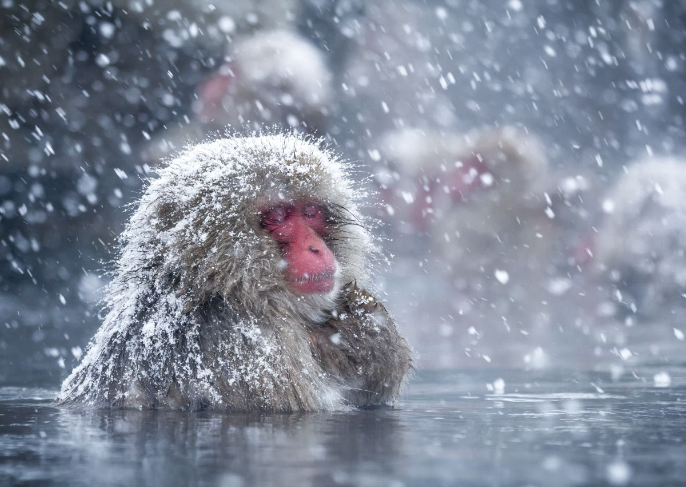

Qui sont les saru ?
Le macaque japonais (Macaca fuscata), surnommé snow monkey en anglais et saru (猿) en japonais, est le primate qui vit le plus au nord au monde, en dehors de l'espèce humaine. On le trouve dans les montagnes du Honshu, où les hivers sont rudes, la neige abondante, et les températures largement négatives.
L'onsen, la solution
Pour survivre au froid, les macaques de la vallée de Jigokudani (littéralement « la vallée de l'enfer », dans la préfecture de Nagano) ont pris une habitude bien à eux : se baigner dans les sources chaudes naturelles, les onsen, exactement comme le font les humains dans les stations thermales voisines. Ils s'y prélassent des heures durant, pelage trempé, entourés de vapeur, pendant que la neige tombe autour d'eux.
Pourquoi c'est unique
Un comportement appris
Ce n'est pas un instinct : la première femelle est entrée dans un bassin dans les années 1960, et le groupe a copié le geste — une véritable transmission culturelle observée et documentée par les primatologues.
Une hiérarchie sociale
L'accès au bassin suit le rang social du groupe : les femelles dominantes et leurs petits s'y installent en premier, les mâles subalternes attendent souvent leur tour en bordure.
Un site protégé
Le Jigokudani Yaen-Koen (parc des singes de Jigokudani) leur est entièrement dédié depuis 1964 — les humains regardent depuis le bord du bassin, jamais dedans.
Y aller
La meilleure période pour les voir dans la neige, fourrure fumante, est l'hiver (décembre à mars), quand le contraste entre le froid et la vapeur de l'onsen est le plus spectaculaire. Le parc se visite après une marche d'environ 30 minutes en forêt depuis le village de Yudanaka, dans les Alpes japonaises.